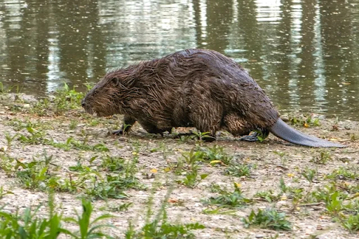
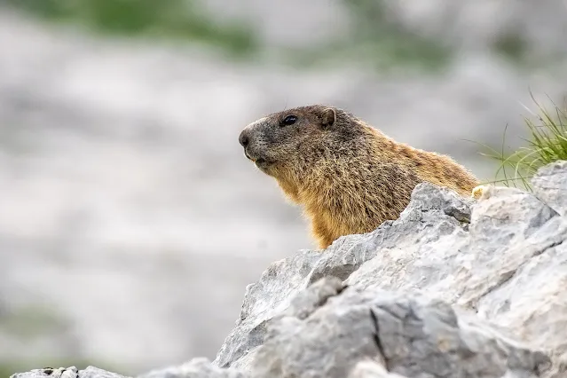

A hód - a természet mérnöke
A hód az egyik legérdekesebb állat az állatvilágban, híres építőkészségéről. Saját otthonát, a hódvárat és a gátakat gondosan megtervezi és megépíti, így változtatja meg a folyók és patakok környezetét. A hód gátjai segítenek a víz megtartásában, és fontos szerepet játszanak az ökoszisztéma egyensúlyában.
Bundája rendkívül sűrű és vízálló, így hideg vízben is jól érzi magát. Tápláléka főként fák kérge, levelek és vízinövények.
A mormota - az alvás bajnoka
A mormota a hegyvidékek lakója, és legismertebb szokása, hogy a téli hónapokra hibernálja magát. Akár hat hónapig is alszik, miközben testhőmérséklete jelentősen lecsökken. A népi hiedelem szerint február 2-án, a „mormota napján” előbújik, és megjósolja a tél hosszát.
A mormoták társas állatok, kisebb kolóniákban élnek, és füttyentéssel figyelmeztetik egymást a ragadozók közeledtére. Táplálékuk főként fű, gyógynövények és magvak.